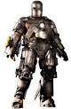
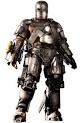

Iron Man is a superhero appearing in American comic books published by Marvel Comics. Co-created by writer and editor Stan Lee, developed by scripter Larry Lieber, and designed by artists Don Heck and Jack Kirby, the character first appeared in Tales of Suspense #39 (cover dated March 1963), and received his own title in Iron Man #1 (May 1968). In 1963, the character founded the Avengers superhero team with Thor, Ant-Man, Wasp and the Hulk.
BIOGRAPHY
Anthony Edward Stark is the son of Howard Stark, a wealthy industrialist who leads Stark Industries, and Maria Stark. A boy genius,he entered MIT at 15 to study engineering and later received master's degrees in engineering and physics. After his parents are killed in a car accident, he inherits his father's company.
Stark is injured by a booby trap and captured by enemy forces led by Wong-Chu. Wong-Chu orders Stark to build weapons, but Stark's injuries are dire and shrapnel is moving towards his heart. His fellow prisoner, Ho Yinsen, a Nobel Prize-winning physicist whose work Stark had greatly admired during college, constructs a magnetic chest plate to keep the shrapnel from reaching Stark's heart. In secret, Stark and Yinsen use the workshop to design and construct a suit of powered armor, which Stark uses to escape. During the escape attempt, Yinsen sacrifices his life to save Stark's by distracting the enemy as Stark recharges. Stark takes revenge on his kidnappers and rejoins the American forces, on his way meeting a wounded American Marine fighter pilot, James "Rhodey" Rhodes.
{kind=link}
.jpg "Iron man 1") 
